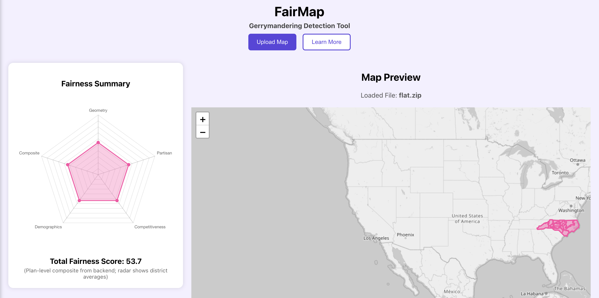

FairMap
A fairness-driven redistricting tool that analyzes geometry, demographics, and partisan balance.

FairMap is a gerrymandering detection tool I designed and engineered using Python, FastAPI, GeoPandas, and Leaflet.js. It determines the fairness of districting plans through metrics such as:
- Geometric compactness
- Partisan metrics (mean-median, efficiency gap)
- Demographic representation
- Competitiveness
- Composite fairness scoring
This project bridges computational geography, data science, and civic-tech advocacy. My goal is to make political mapping more transparent and accessible for communities navigating redistricting challenges.